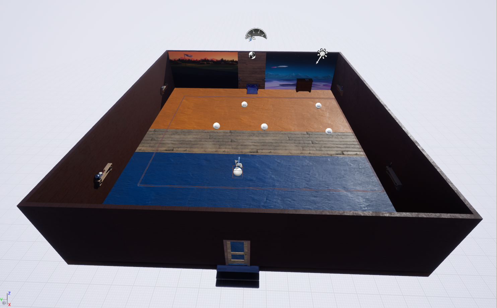
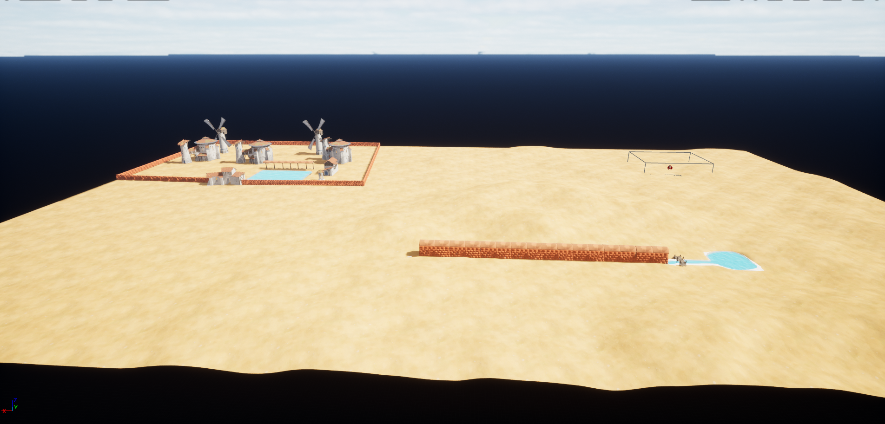

I have a rich history with gaming, starting with classics like Duck Hunt on the original Nintendo and Nascar 98 on the Playstation. Racing games became a favorite, thanks to my father's involvement in Dirt Track racing. The turning point came when I acquired an Xbox 360 and played Elder Scrolls Oblivion, which ignited my passion for game development. Skyrim became another cherished experience in my gaming journey.
In high school, a broken ankle led to the introduction of World of Warcraft by my Grandma, and I became instantly hooked on the game, continuing to enjoy it to this day. Additionally, I have played other games such as Runescape and Diablo IV and many others.
Now, as an adult, I remain an enthusiastic computer gamer, exploring various genres while also working on my own game development projects alongside my studies.